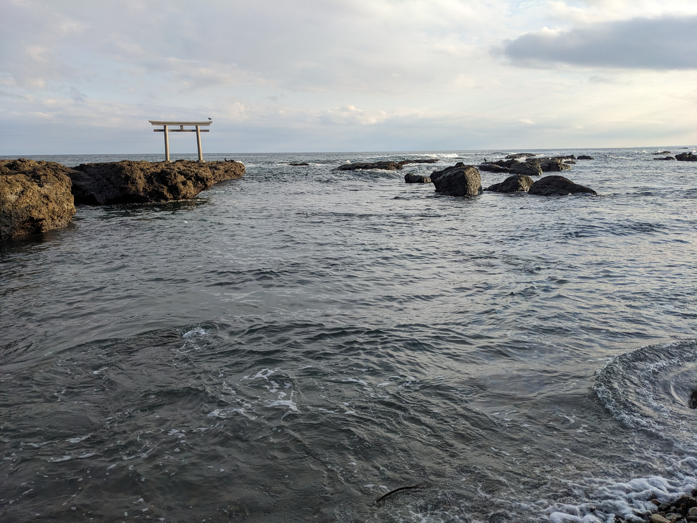

New Year Beach Trip
Posted : Dec 31, 2023 For new years, I went to Oarai with some friends to see a shine on the beach. The waves were beautiful and the beach was made up of mostly small rocks that made a wonderful rainlike sound as the waves crashed upon them. We had plans to see more of the city but my friends and I ended up spending two hours just watching the waves, talking, and listening to the sound of the falling pebbles. It was a wonderful experience.
Ever since I got my Japanese driver's license two years ago day trips like this have made for some of my best memories In Japan. Having come from a small town in the United States surrounded by nature, I find that Tokyo at times can be overwhelming and an excursion into nature that the surrounding countryside has to offer is always a great fix.